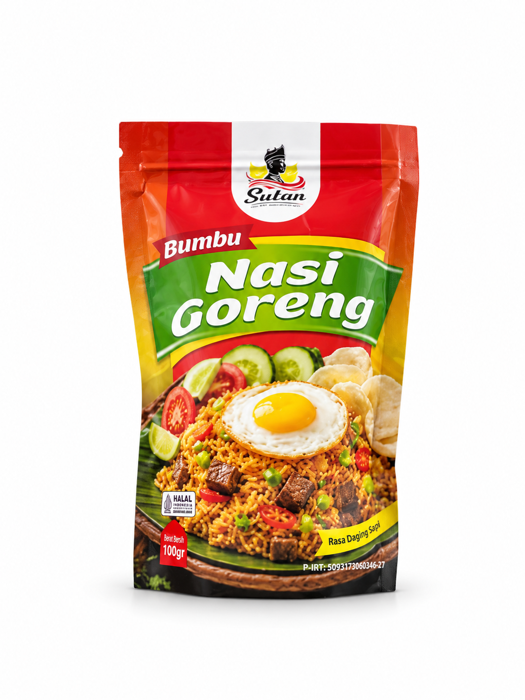

Rempah pilihan
Diproses dari bahan berkualitas untuk rasa yang konsisten dan autentik.
SUTAN hadir dengan perpaduan rempah pilihan KHAS MINANG dan rasa yang autentik, membuat nasi goreng Anda lebih gurih, harum, dan menggoda setiap suapan.

Diproses dari bahan berkualitas untuk rasa yang konsisten dan autentik.
Ditata untuk kebutuhan keluarga yang lebih sehat dan praktis dalam setiap masakan.
Siap pakai di rumah, warung, atau usaha kuliner untuk hasil maksimal dalam hitungan menit.
Mudah dipesan dan dikirim sampai ke tangan Anda dengan layanan yang responsif.

Bumbu nasi goreng khas Minang dengan rasa gurih, pedas seimbang, dan aroma rempah autentik.
Pilih SUTAN untuk rasa yang konsisten, autentik, dan selalu bikin nagih.
Hubungi Kami